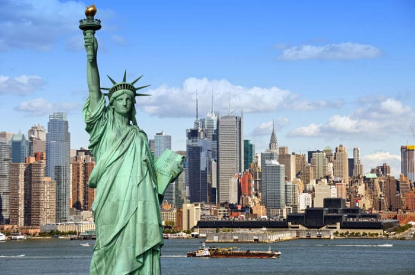
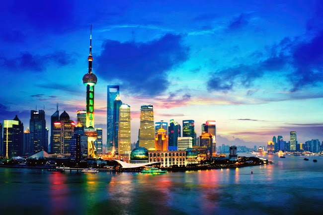
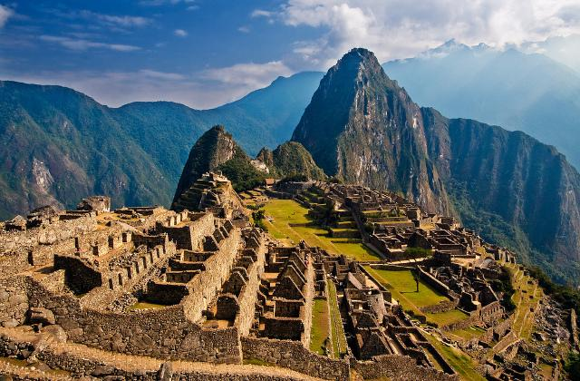
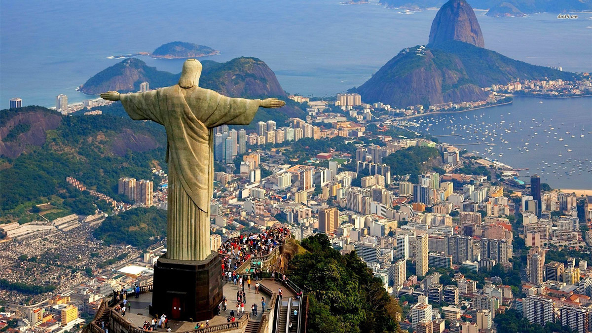
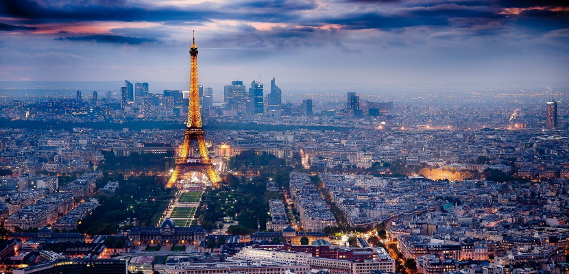

Creando mi propia Aventura
Una breve reseña de esta ciudad Maravillosa
Como regalo, les dejo esta nota sobre Venecia, lugar especial!
Venecia (en italiano: Venezia [veˈnɛʦːi̯a] y en véneto: Venessia o Venesia [veˈnɛsi̯a]) es una ciudad ubicada en el noreste de Italia. Es también la capital de la región véneta y de la provincia de Venecia. Su centro histórico, declarado Patrimonio de la Humanidad por la Unesco,2 está situado en un conjunto de islas en la laguna de Venecia, en el norte del mar Adriático.